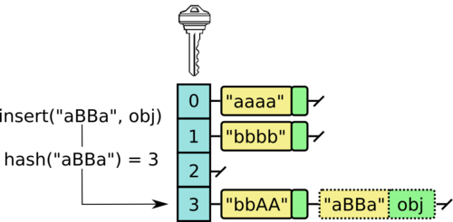

列表与字典的隐藏价格
本节目标：能说出列表、集合与字典各操作的复杂度，并在写代码时据此选对容器。
上一课把「这种写法会不会超时」归结成一个大 O 记号：数基本操作、只保留增长最快的一项。这一课把这把尺子移到 Python 里用得最多的几种容器——列表、集合、字典——上。同一道题，写法上一课已经会了（循环加几个操作），但装数据的容器选错，复杂度会从 O(n) 悄悄变成 O(n^2)。
写题时最顺手的两个动作，一是往列表末尾 append，二是在列表里用 in 查某个元素在不在。样例只有三五个数，这两个动作怎么看都够快；数据放大十倍，一个仍然便宜、另一个变得昂贵。很多「代码没错但超时」的题，问题就出在一行 in 或一次 pop(0) 上。这一课要练熟一个动作：写每一行代码之前，心里清楚它要付多少代价。
列表的便宜操作
列表把元素一个挨一个放进一段连续的内存里，内部记的是这段连续空间的起始位置与当前长度。这带来两个便宜操作。
按下标取元素是 O(1)。 lst[i] 不需要从头数到第 i 个：起始位置加上 i 个元素的偏移，一步就能算出第 i 个元素的位置。改一个元素（lst[i] = v）、读长度（len(lst)）也一样，都不随列表变长而变慢，是 O(1)。
往末尾追加是 O(1) 均摊。 多数时候 append(x) 直接写进末尾的空位，是 O(1)。当列表长度增长到超出已分配的空间，就要另找一块更大的连续空间，把整个列表搬过去，这一次是 O(n)。「均摊」（amortized）一词借自会计里的摊销：把这一次搬家的开销，平摊到很多次 append 上，平均下来每次仍是 O(1)。所以准确的说法是「O(1) 均摊」——多数时候是 O(1)，偶尔一次扩容是 O(n)，把后者摊到前者上仍是 O(1)。
用列表做一件事是最自然的写法：
nums = []
nums.append(3)
nums.append(1)
nums.append(4)
print(nums[1]) # 1
print(len(nums)) # 3nums[1] 一步到位，append 往末尾写，两者都不随列表变长而变慢。
插入与删除的代价
靠近开头插入或删除，代价高得多。原因还是连续存储：lst.pop(0) 把第 0 号元素拿走之后，它后面的 n-1 个元素每一个都要往左挪一格，才能保持「元素挨着放」——这是一次 O(n) 的搬动。lst.insert(0, x) 同理，先把所有元素往右挪一格，再写进开头。越靠前，要挪的元素越多：删最后一个（pop() 不带参数）是 O(1)，删第一个是 O(n)。
这里有一个容易踩的坑：把 pop(0) 当队列用。队列是先进先出，一头进、另一头出。用列表实现队列，出队写成 lst.pop(0)，每出一个就要把剩下的元素全挪一遍，出 n 个总共是 O(n^2)。官方文档对此给了一句明确建议：在列表开头插入或弹出很慢，实现队列应该用 collections.deque。
deque 是双端队列（double-ended queue，读作 deck），专门为两端都快设计：append、appendleft、pop、popleft 都是 O(1)。用 deque 实现队列：
import collections
q = collections.deque()
q.append('a') # 队尾进
q.append('b')
first = q.popleft() # 队头出，O(1)
print(first) # a需要按位置随机访问时用列表——deque 按下标访问两端是 O(1)、访问中间是 O(n)，它只赢在两端。
哈希查找直接到位
列表里查一个元素在不在，x in lst 从头开始逐个比较，最坏要把整个列表扫完，O(n)。集合与字典的查法不同。
set 与 dict 是哈希表。拿到一个键，先算一个哈希值——hash 这个词的本义是把东西切碎、拌匀，哈希函数做的正是把任意一个键「拌」成一个整数——再用这个整数直接算出该去哪个槽位找。所以 x in s、x in d、d[key] 平均是 O(1)，和容器里装了多少个元素无关。
「平均」这两个字要留意。两个不同的键可能算出同一个槽位，这叫冲突；冲突的键挂到同一个槽位后面，查的时候要顺着逐个比。正常数据下冲突很少，平均 O(1)；若构造一批都撞到同一个槽的键，查找会退化成 O(n)——这是最坏情况，实际题目里极罕见，但它存在。因此说「哈希查找平均 O(1)」，不说「永远 O(1)」。

由此得到一个判断：需要反复查「某个元素在不在」，用集合或字典。最常见的场景是查重——判断一个元素是不是第一次出现。写成列表，每来一个元素都在已见过的列表里 in 一遍，O(n^2)；换成集合，每查一次 O(1)，总共 O(n)。
# 列表查重：每来一个元素都要扫一遍 seen
seen = []
for x in data:
if x in seen:
print('重复', x)
else:
seen.append(x)
# 集合查重：每次 O(1)
seen = set()
for x in data:
if x in seen:
print('重复', x)
else:
seen.add(x)集合字面量用花括号 {1, 2, 3}；空集合只能用 set()，因为 {} 建的是空字典。字典字面量写 {'a': 1, 'b': 2}，查键是否存在用 key in d，取值用 d[key]。
切片会复制一份
lst[a:b] 取一段切片，返回一份新列表，把 a 到 b-1 这 k 个元素挨个复制过去，代价 O(k)（k 是切出来的长度）。lst[:] 与 lst.copy() 复制整个列表，O(n)。
要记住的是「复制」：切片之后是一个新列表，改它不影响原列表。若以为 lst[:] 只是「看一眼」，就忽略了它复制一份的代价。当循环里反复对一个长列表做切片，复制本身的 O(n) 叠加到外层循环上，会悄悄变成 O(n^2)。
a = [1, 2, 3, 4]
b = a[1:3] # 复制出 [2, 3]，O(2)
b[0] = 99 # 改的是 b，a 不变
print(a) # [1, 2, 3, 4]
print(b) # [99, 3]用实测对照估算
复杂度的「平均／最坏」说得再清楚，也不如亲手量一次踏实。计时用标准库的 time 模块：time.perf_counter() 返回一个单调递增的浮点秒数，前后各取一次、相减，就是中间这段代码的耗时。它只认「时钟走了多久」，不依赖任何固定常数。
同一份数据，三种查法各跑一遍：
import time
n = 1000000
lookup = 200
lst = []
for i in range(n):
lst.append(i)
s = set()
for i in range(n):
s.add(i)
d = {}
for i in range(n):
d[i] = i
targets = []
for i in range(n - lookup, n):
targets.append(i)
t0 = time.perf_counter()
for x in targets:
y = x in lst
t1 = time.perf_counter()
for x in targets:
y = x in s
t2 = time.perf_counter()
for x in targets:
y = x in d
t3 = time.perf_counter()
print('列表 in', f'{t1 - t0:.6f}', '秒')
print('集合 in', f'{t2 - t1:.6f}', '秒')
print('字典查', f'{t3 - t2:.6f}', '秒')目标都取在接近末尾的位置，列表 in 每次都要从头扫到接近末尾，正好把 O(n) 摊开看。
本机（Python 3.14 的 free-threading 构建）实测：
| 操作 | 本机实测 |
|---|---|
列表 in（n = 10^6，查 200 次） | 约 1.50 秒 |
集合 in（同上） | 约 0.000018 秒 |
| 字典查（同上） | 约 0.000016 秒 |
pop(0)（20 万次） | 约 2.74 秒 |
deque.popleft()（20 万次） | 约 0.013 秒 |
列表 in 比集合慢约 8 万倍（差约 5 个数量级），pop(0) 比 popleft() 慢约 200 倍（差约 2 个数量级）。放大十倍规模，列表那两行的耗时还会再涨（in 按线性涨、pop(0) 按平方涨），集合、字典与 deque 几乎不动。
表里的秒数是本机实测、非通用值，换一台机器、换一个 Python 版本，绝对值会变。要记的是趋势——列表 in 随 n 线性变慢，集合与字典的查法几乎不随 n 变——以及「动手量」这个动作。
这一课的动手部分落在 lab 里（任务与断言见 lab/0003-python-list-dict-cost/，做完对照 lab/solutions/）。要做的是同一件事：同一份数据，用「列表 in」「集合 in」「字典查」各跑一遍，把耗时打印成一张对照表；再用 pop(0) 与 deque.popleft() 对照一次。计时用 time.perf_counter() 前后相减。改一改数据规模 n，看「放大十倍」之后哪几行数字跟着翻倍、哪几行几乎不动。
一张复杂度速查表
把这一课的口径收进一张表，以后写代码随手查。
| 操作 | 复杂度 | 边界 |
|---|---|---|
lst[i] 取元素 | O(1) | 下标直达，与 n 无关 |
lst[i] = v 改元素 | O(1) | 同上 |
lst.append(x) | O(1) 均摊 | 偶尔扩容要搬整块 |
lst.pop() 删末尾 | O(1) | 不用搬动别的元素 |
lst.pop(i) / lst.insert(i, x) | O(n) | 后面的元素要挪，越靠前越贵 |
len(lst) | O(1) | 长度存着，不现数 |
x in lst | O(n) | 从头逐个比，最坏扫完 |
lst[a:b] 切片 | O(k) | 复制出 k 个元素的新列表 |
x in s / x in d | O(1) 平均，O(n) 最坏 | 哈希查找，冲突堆一起才退化 |
d[key] | O(1) 平均，O(n) 最坏 | 同上 |
deque 的 append/pop/appendleft/popleft | O(1) | 两端都快 |
deque[i] | 两端 O(1)，中间 O(n) | 频繁随机访问改用列表 |
选容器时按这三条走：只往末尾加、按位置取，用列表；反复查「在不在」，用集合，查完还要对应的值，用字典；一头进、另一头出，用 deque，别写 pop(0)。配套项目「AI 刷题助手」在推荐候选算法、给出可执行写法时，同样要把「这题的数据规模下该用列表还是集合／字典」作为一条判断——数据小的题用什么都不慢，数据大的题这一步就决定过不过。